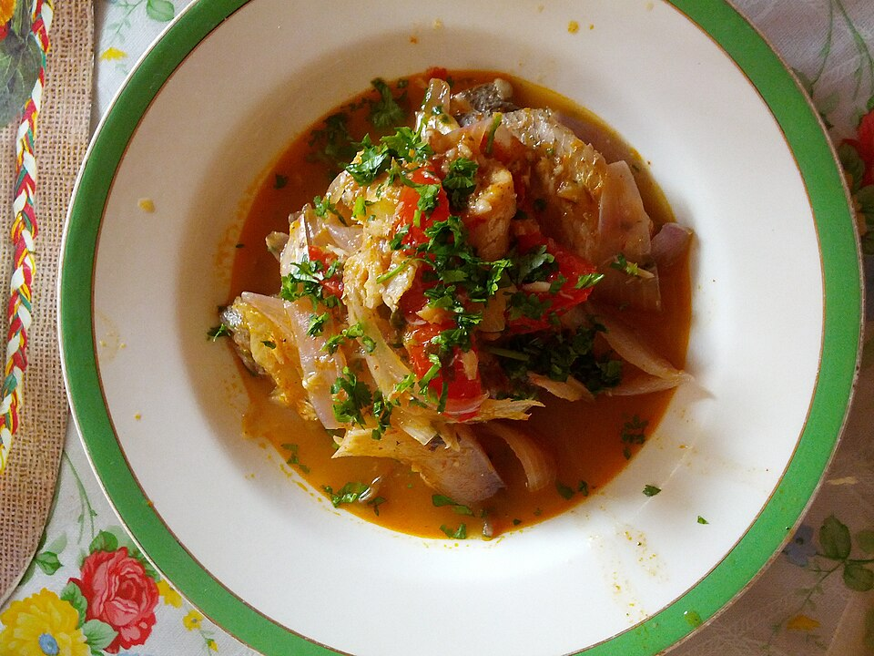
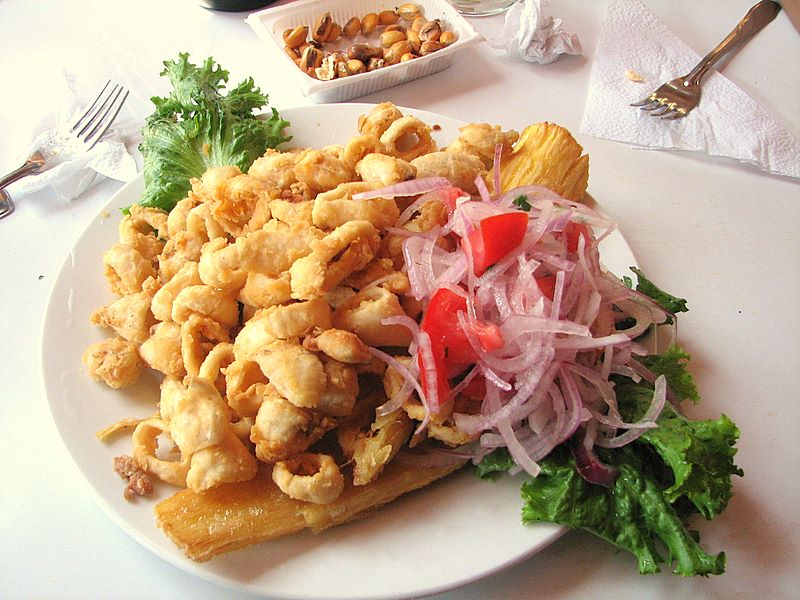
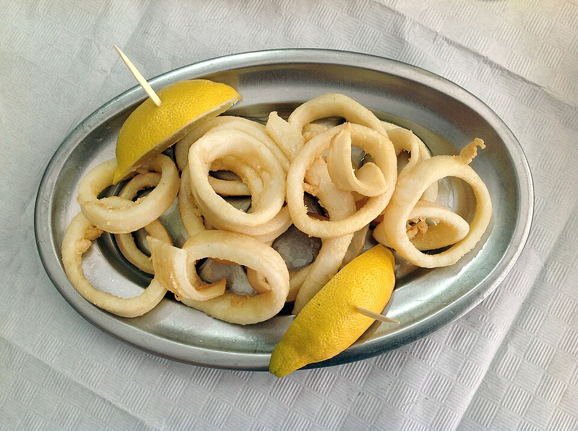
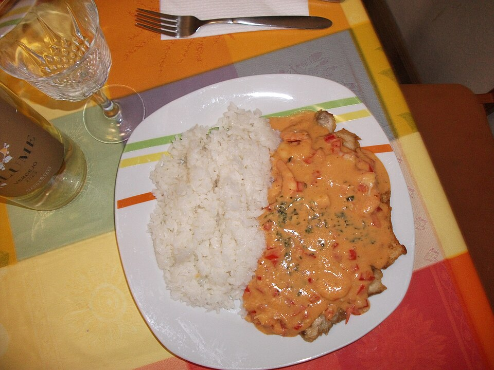
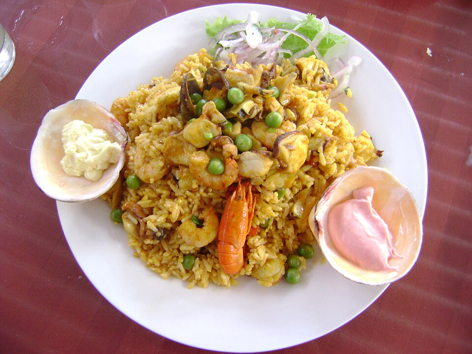
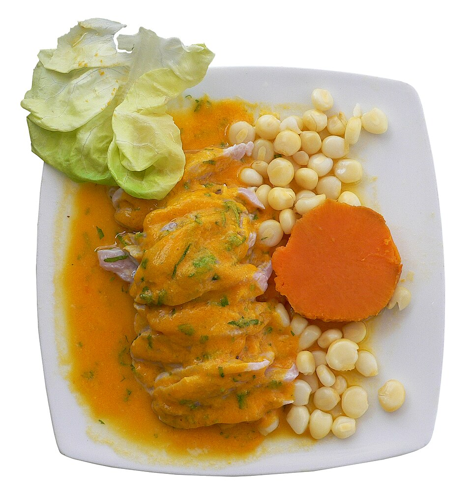
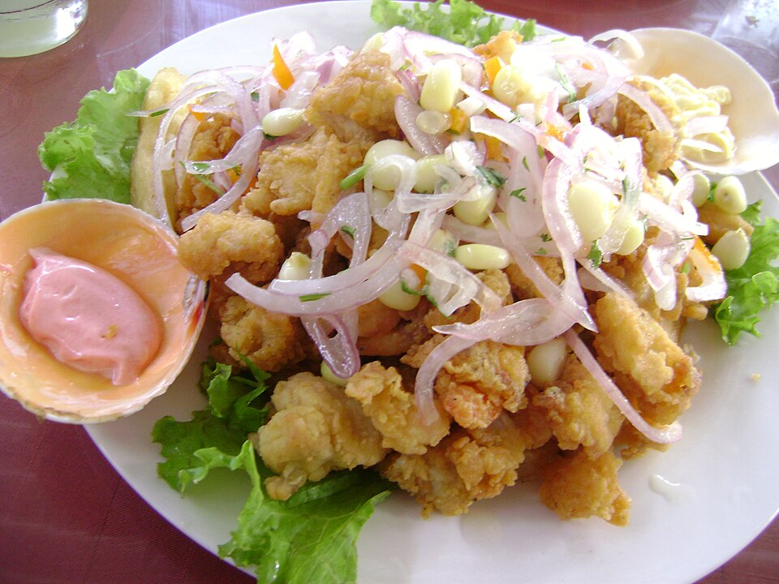
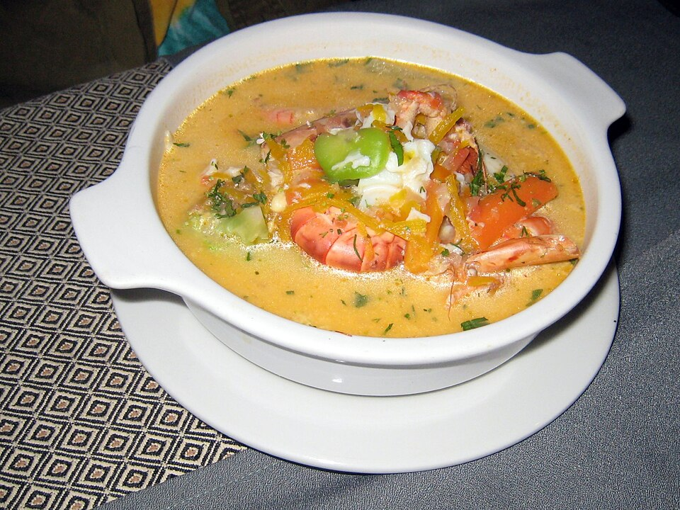

12-15 min
★ PLATO ESTRELLA
12-15 min
★ PLATO ESTRELLA
Cebiche Clásico Piurano
Con Cabrilla fresca de Don Pedro ChungaDados de Cabrilla Norteña de textura firme, marinados al instante con limón de Chulucanas, ají limo, cebolla criolla, zarandaja piurana, camote glaseado, choclo y chifle crocante.

12-15 min TRADICIÓN PAITANASudado Especial a la Paitana
Con chicha de jora maceradaCabrilla entera cocida a fuego lento en reducción de chicha de jora norteña, cebollas gruesas, tomate, ají amarillo y culantro, acompañada de yucas harinosas.

12-15 min SIN ESPINASChicharrón Crocante de Tollo
Tollo de leche de Caleta YacilaTrozos de Tollo de Leche sin espinas marinados en ajo, mostaza y limón, fritos con costra crocante y corazón tierno. Servido con yucas doradas, sarsa criolla y tártara.

12-15 min FAVORITO DE LA TARDEChicharrón de Pota al Wok
Manto fresco de Caleta La IslillaAros crujientes de pota tierna de 18 mm, libres de amoniaco gracias al frío continuo a 0.9 °C. Acompañados de limón fresco, yuca frita y ají mochero.

12-15 min 👑 ALTA COCINA GOURMETMero Murique a lo Macho
Espinel de fondo en Tierra ColoradaFilete sellado de Mero Murique de roca bañado en salsa coral picante de langostinos jumbo, pota y conchas de abanico, acompañado de arroz graneado.

12-15 min CALIENTITO AL SARTÉNArroz con Mariscos a la Norteña
Con langostinos 16/20 y conchasArroz meloso cocinado con caldo concentrado de cangrejos y cabrilla, flambeado al wok con pasta de ají panca, arvejitas, langostinos frescos y conchas de abanico.

12-15 min CHEF RECOMIENDATiradito de Lenguado al Ají Amarillo
Lenguado fino de fondo arenosoDelgadas láminas tipo sashimi de Lenguado Fino de Colán bañadas en cremosa leche de tigre al ají amarillo peruano, acompañadas de choclo desgranado y camote.

12-15 min PARA COMPARTIRJalea Mixta Crocante Paitana
Chita, tollo, pota y langostinosMontaña crocante de trozos de pescado de roca, anillos de pota, conchas y langostinos empanizados, coronada con abundante sarsa criolla norteña, choclo y salsa rosada.

12-15 min RECONSTITUYENTEChupe Norteño de Langostinos
Langostinos Jumbo frescos 16/20Sopa cremosa tradicional con langostinos jumbo enteros, papa amarilla, huevo escalfado, queso fresco, choclo y aroma de huacatay.
Tu Comanda / Pedido en Cocina
Agrega platos de la carta para pedir a tu mesa o por delivery directo en Piura.
Reserva tu Mesa en "El Cántaro"
Asegura tu mesa hoy para disfrutar de cebiche recién cortado, sudados a la paitana en olla de barro y chicharrones crocantes con trazabilidad marina verificada.
¿Sabes quién sacó el pescado que estás comiendo?
En Cebichería "El Cántaro", cada plato incluye una cartilla con código QR conectado a PESCA-CLICK. Escanea o haz clic abajo para ver el historial completo de extracción en Paita y la temperatura continua a 1.4 °C.